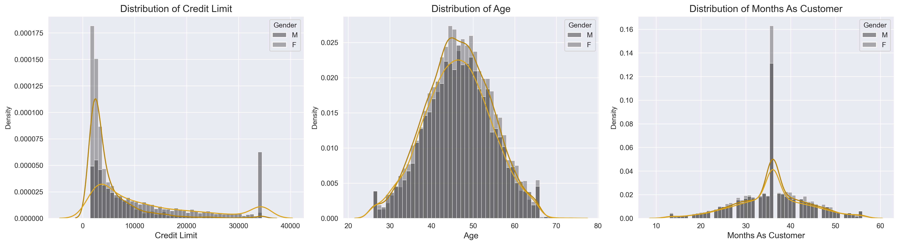
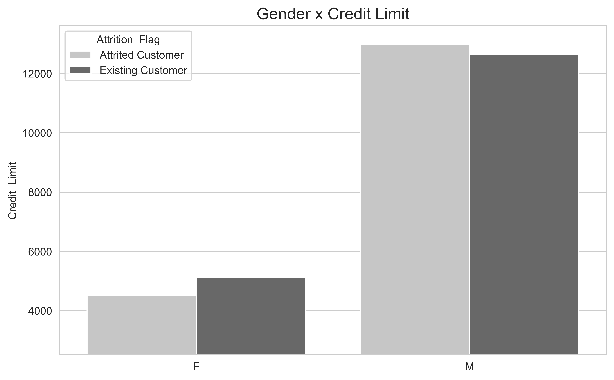
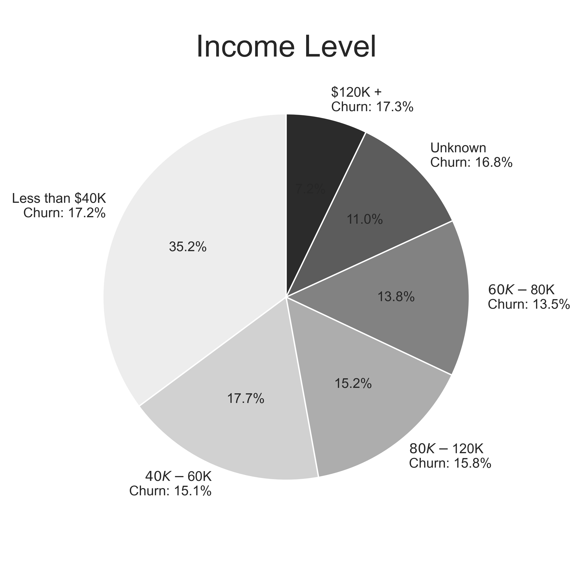
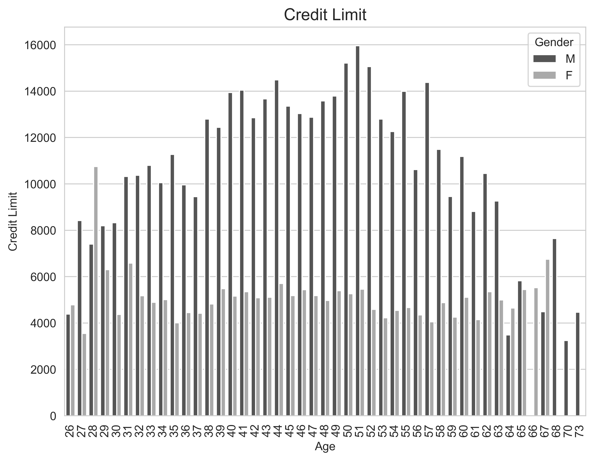
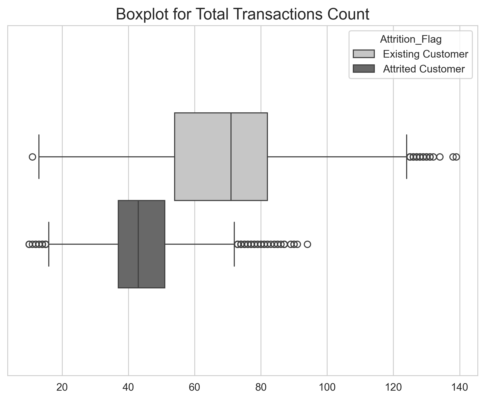
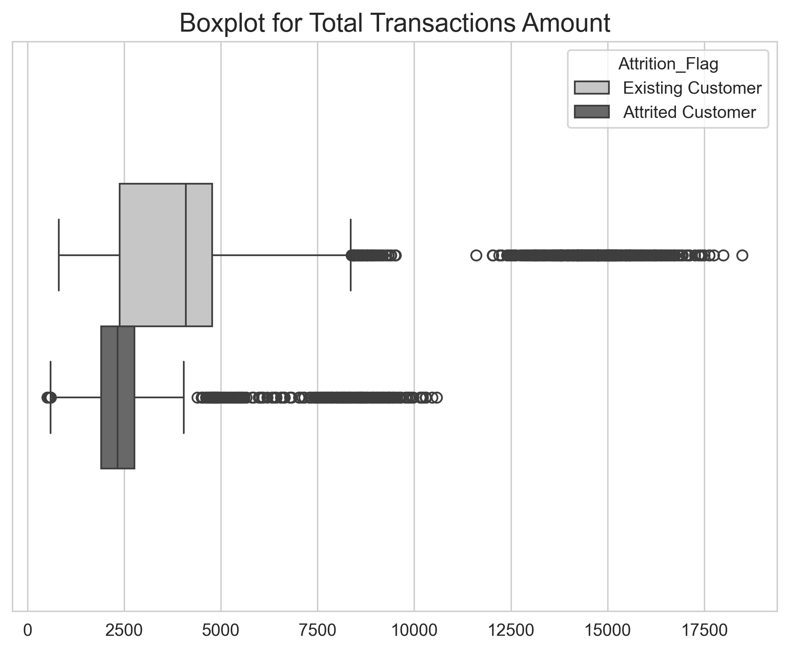
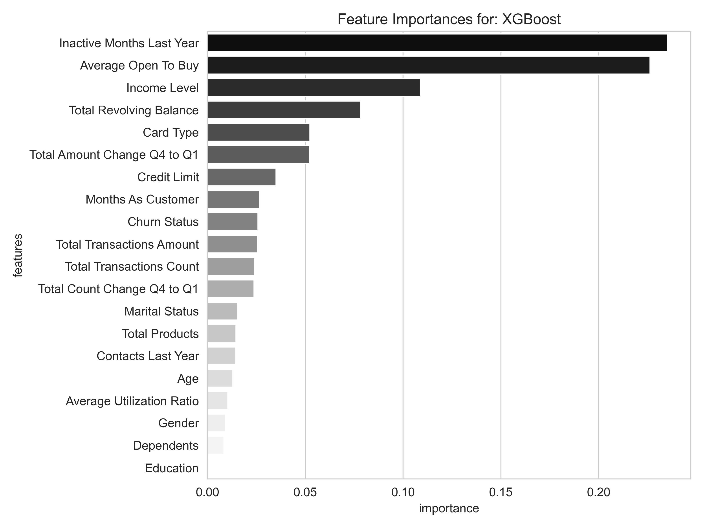
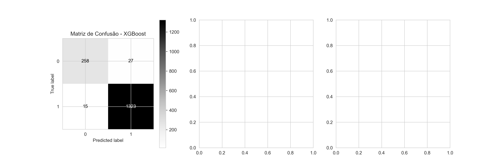

Visão geral
O projeto
Este projeto tem como objetivo prever a probabilidade de cancelamento de cartões de crédito (churn) e identificar padrões comportamentais e financeiros entre os clientes de uma instituição bancária.
O conjunto de dados contém 11.573 registros, abrangendo variáveis como limite de crédito, renda, número de transações e nível de educação dos clientes. A análise busca responder questões cruciais, como quais perfis apresentam maior risco de cancelamento e se características como gênero e salário influenciam a retenção.
Métodos aplicados
Realizo uma limpeza rigorosa dos dados, tratando valores faltantes e outliers e aplicando codificação para variáveis categóricas. Foram desenvolvidos três modelos de Machine Learning supervisionados — DecisionTreeClassifier, RandomForestClassifier e XGBoost — com uma precisão superior a 90% em todos os casos.
Além disso, uma análise aprofundada das importâncias das features foi conduzida para identificar os principais fatores que influenciam o churn, orientando decisões estratégicas.
Ferramentas utilizadas
Nesse projeto utilizei a linguagem Python e suas bibliotecas Pandas, Matplotlib e NumPy para a análise e limpeza de dados; posteriormente, a biblioteca Scikit-learn para a criação dos modelos e Joblib para o dumping dos modelos.
- Python
- Pandas
- NumPy
- Matplotlib
- Scikit-learn
- XGBoost
- Joblib
Parte 1
Introdução ao conjunto de dados
1 — Contexto de negócio
Um gerente do banco está preocupado com o número crescente de clientes que estão deixando os serviços de cartão de crédito. Eles apreciariam muito se fosse possível prever quais clientes irão cancelar o serviço, para que possam agir de forma proativa, oferecendo um atendimento melhor e revertendo a decisão dos clientes.
Então, o gerente encontrou uma possível solução para o seu problema ao contratar Angel, um cientista de dados, para extrair insights a partir de um dataset por meio de análise exploratória de dados. Além disso, solicitou que Angel construísse um modelo de Machine Learning capaz de prever, com base nos dados, se um cliente cancelaria ou não o cartão de crédito, e que entregasse também a precisão desse modelo.
2 — Dicionário de dados
Abrir o dicionário das principais variáveis
- CLIENTNUM
- Número único de identificação do cliente que possui a conta.
- Attrition_Flag
- Variável de evento interno que indica a atividade do cliente.
- Customer_Age
- Idade do cliente em anos.
- Gender
- Gênero do cliente.
- Dependent_count
- Número de dependentes.
- Education_Level
- Grau de escolaridade do titular da conta.
- Marital_Status
- Estado civil.
- Income_Category
- Categoria de renda anual do titular da conta.
- Card_Category
- Tipo de cartão: Blue, Silver, Gold ou Platinum.
- Months_on_book
- Período de relacionamento com o banco, em meses.
- Months_Inactive_12_mon
- Número de meses inativos nos últimos 12 meses.
- Contacts_Count_12_mon
- Número de contatos nos últimos 12 meses.
- Credit_Limit
- Limite de crédito no cartão.
- Total_Revolving_Bal
- Saldo rotativo total no cartão.
- Avg_Open_To_Buy
- Linha de crédito disponível, em média nos últimos 12 meses.
- Total_Trans_Amt
- Valor total das transações nos últimos 12 meses.
- Total_Trans_Ct
- Número total de transações nos últimos 12 meses.
- Avg_Utilization_Ratio
- Taxa média de utilização do cartão.
- Total_Relationship_Count
- Total de produtos mantidos pelo cliente.
3 — Metodologia do projeto
Neste projeto, optei por adotar uma metodologia de resolução de problemas de dados apresentada em um dos livros mais renomados sobre Machine Learning, o “Hands-On Machine Learning with Scikit-Learn & TensorFlow”, de Aurélien Géron.
- Olhe para a visão geral.
- Obtenha os dados.
- Descubra e visualize os dados para obter insights.
- Prepare os dados para algoritmos de Machine Learning.
- Selecione um modelo e treine-o.
- Ajuste seu modelo.
- Apresente sua solução.
- Lance, monitore e mantenha seu sistema.
4 — Requisitos de solução
Durante a conversa com o gerente, Angel perguntou quais eram as principais informações que ele gostaria de obter. Em resposta, o gerente definiu um conjunto de perguntas estratégicas relacionadas ao negócio:
- Qual é o perfil dos clientes com maior risco de cancelar o cartão?
- Como o gênero afeta sua condição financeira e as taxas de cancelamento?
- O nível de educação influencia a probabilidade de cancelamento?
- Clientes que usam mais o cartão recebem limites maiores ou menores?
- Clientes com salários altos estão mais propensos ao cancelamento?
- Quais comportamentos são comuns entre os clientes que cancelam?
Além dessas perguntas, o gerente solicitou um modelo com acurácia superior a 85%. Ele enfatizou a importância de escolher um modelo facilmente interpretável, permitindo ao banco compreender melhor o funcionamento do algoritmo e ter maior controle sobre suas decisões.
No Wix, este projeto foi tratado com uma visão de storytelling. Para quem prefere algo mais direto e detalhado, o notebook completo permanece disponível no GitHub.
Parte 2
Análise exploratória de dados
Nesta seção, realizamos uma análise exploratória focada em variáveis relacionadas ao comportamento dos clientes. As visualizações permitem explorar padrões e correlações e compreender melhor as dinâmicas de crédito e churn.
1 — Distribuição de variáveis
O código funciona criando três subplots que servem como template para dois tipos de gráficos sobrepostos, um KDE plot e um histplot, ambos com matiz definida para o gênero do usuário e uma paleta customizada.
- Idade: a média dos clientes varia entre 30 e 60 anos.
- Limite de crédito: em média, fica entre 2.000 e 10.000 dólares; há um número significativo de mulheres na faixa de 2.000 a 5.000.
- Tempo como usuários: há um aumento notável em clientes com 37 meses de relacionamento.

2 — Variáveis e limite de crédito
O código executa o agrupamento das variáveis categóricas em relação à média do limite de crédito, incorporando também a variável de churn para facilitar a análise.
- À medida que o número de dependentes aumenta, o limite tende a crescer.
- Clientes sem vínculos de relacionamento geralmente apresentam limites mais elevados.
- O limite aumenta quase linearmente com o salário.
- Não há relação aparente entre educação e limite de crédito.
- Quanto menor a quantidade de produtos vinculados, maior tende a ser o limite.
- Homens possuem limites significativamente maiores em comparação às mulheres.


3 — Correlações entre variáveis numéricas
A matriz foi gerada com pandas.corr() e visualizada
em um heatmap. Entre os relacionamentos observados:
- Months As Customer versus Age: correlação forte de 0,79.
- Credit Limit versus Average Open To Buy: correlação positiva de 0,62.
- Total Transactions Amount versus Count: correlação alta de 0,81.
- Average Utilization Ratio versus Credit Limit: correlação negativa de −0,48.
- Average Open To Buy versus Utilization: correlação negativa de −0,54.
4 — Categorias e probabilidade de churn
A maioria dos clientes se divide entre solteiros e casados, com uma pequena porcentagem de divorciados. De modo geral, ser casado reduz a probabilidade de churn. Clientes com salários e níveis de educação mais altos apresentam maior propensão ao cancelamento.


5 — Perfil do cliente e variáveis financeiras
Depois dos 30 anos, observa-se que as mulheres possuem limite de crédito menor que o dos homens. Em contrapartida, fazem maior uso do cartão. O valor médio das transações cresce até os 50 anos, quando começa a declinar.
A utilização do cartão é estável entre as faixas etárias, com homens alcançando o nível das mulheres por volta dos 60 anos. O número de transações se mantém constante até os 65 anos e começa, então, a apresentar queda gradual.

6 — Tipo de cartão e educação
A esmagadora maioria dos clientes possui cartão Blue. Os níveis educacionais não apresentam influência significativa na distribuição dos cartões Blue, Silver e Gold. No Platinum, existe um aumento considerável na proporção de membros com doutorado e pós-doutorado.
7 — Distribuição estatística e churn
A fidelidade ao banco varia entre 20 e 55 meses, tanto entre cancelados quanto ativos. Clientes que cancelaram fazem consideravelmente menos transações e realizam transações de menor valor médio. Apesar dessas diferenças, os limites de crédito são semelhantes.


Parte 3
Tratamento do conjunto de dados
1 — Estratégias e procedimentos
Tal como se faz uma limpeza em um quarto ou em uma sala, para realizar a limpeza em um conjunto de dados é necessário ter um procedimento: você não pode começar passando a vassoura e depois jogar a água.
Por isso, neste e em outros projetos, costumeiramente sigo a seguinte ordem: eliminação de colunas inúteis, identificação e remoção de valores nulos, identificação e remoção de outliers, criação de variáveis do tipo dummy e encoding. Isso garante um dataset limpo e pronto para funcionar em um modelo de ML.
2 — Valores nulos
Conforme eu trabalhava com o dataset, percebi que não existiam
valores np.nan, porque eles se apresentavam de outra
forma, como “Unknown”. Criei uma função para convertê-los em
np.nan, facilitando o trabalho, além de funções para
somar e visualizar a porcentagem de valores faltantes por coluna.
Como existiam poucas linhas faltantes e o dataset não era grande, não desejei eliminar essas linhas. Escolhi preencher com o elemento da célula seguinte e, para aumentar a chance de proximidade, ordenei antes pelo limite de crédito.
3 — Outliers
Para identificar e remover outliers, utilizei o método de John Tukey, o mesmo empregado na criação de boxplots. Uma função retorna o dataframe filtrado entre limites inferior e superior definidos pelos quartis de cada coluna.
4 — Variáveis categóricas
Como havia poucas linhas, tentei usar pd.get_dummies
o mínimo possível. Apenas gênero e estado civil viraram dummies,
criando três novas colunas com drop_first=True.
Para variáveis com ordem implícita — em que se espera, por exemplo,
que um cartão Platinum seja mais relevante que um Gold — estabeleci
essa ordem em listas e utilizei ferramentas do
sklearn.preprocessing para atribuir valores numéricos.
Parte 4
Previsões com Machine Learning
1 — Seleção inicial de modelos
Separei as variáveis em features e target, apliquei um StandardScaler e escolhi alguns dos principais modelos clássicos para testar sua performance. Após validação cruzada, todos apresentaram acurácia acima de 87%.

2 — Refinando a Decision Tree
No site original, mostrei apenas a tunagem de um dos modelos, já que o processo dos três era parecido. Utilizei GridSearch para selecionar um dicionário de parâmetros e performar validação cruzada com dez iterações. Cerca de 50 mil árvores foram treinadas e avaliadas para encontrar os melhores parâmetros.
Nossa árvore de decisão saiu de 93,06% de acurácia para 94,33%. Pode parecer um salto pequeno, mas, quando se trata de negócios, pode representar milhares ou milhões de dólares conforme o tamanho da operação.
3 — Comparação entre previsões
As previsões foram realizadas em um conjunto de teste que os modelos ainda não tinham visto. Os resultados foram organizados em um dataframe para comparar Decision Tree, Random Forest e XGBoost com os valores reais.
4 — Importância das features
Com feature_importances_, foi possível determinar o
grau de importância de cada coluna. Average Open To Buy e Income
Level aparecem repetidamente no topo. Education, Dependents e
Gender ficam com frequência na base, indicando pouca relevância
para a previsão do churn.


5 — Matrizes de confusão
As matrizes mostram resultados semelhantes e coerentes com as acurácias: a Decision Tree possui mais falsos positivos e negativos, enquanto o XGBoost apresenta a menor quantidade. Mesmo com poucos pontos percentuais de vantagem, o XGBoost evita falsos positivos e negativos até 2,5 vezes melhor que os outros modelos.


Conclusão
Insights e respostas do estudo
Após uma análise detalhada, reunimos uma ampla gama de insights suficientes para responder de maneira fundamentada às questões levantadas no início do projeto.
Qual é o perfil de maior risco?
Clientes mais velhos, que realizam menos transações e têm limites semelhantes aos clientes ativos, apresentam maior risco de cancelamento.
Como o gênero afeta o comportamento?
Mulheres costumam ter limites menores, mas utilizam seus cartões com mais frequência, resultando em padrões de uso diferentes.
A educação influencia?
Pessoas com níveis de educação mais altos mostraram maior probabilidade de cancelamento na base analisada.
Uso e limite de crédito
Clientes que realizam mais transações frequentemente recebem limites maiores, pois o valor total de transações se relaciona ao limite.
Salários altos e churn
Clientes com salários mais altos mostram, nessa análise, uma tendência maior ao cancelamento.
Comportamentos comuns
Clientes que cancelam tendem a fazer menos transações e apresentam uso menos ativo do cartão.
Também cumprimos os requisitos para os modelos de Machine Learning, desenvolvendo três alternativas com acurácia superior a 85%. Cada uma possui análise de importância das features, permitindo identificar os principais fatores que influenciam suas previsões.
A DecisionTreeClassifier atende ainda ao requisito de alta interpretabilidade: sua estrutura simples permite regras de decisão claras e visualização direta, diferentemente de Random Forest e XGBoost, que combinam múltiplas árvores.
Texto migrado e reorganizado a partir do estudo original no Wix. Código e notebook no GitHub.